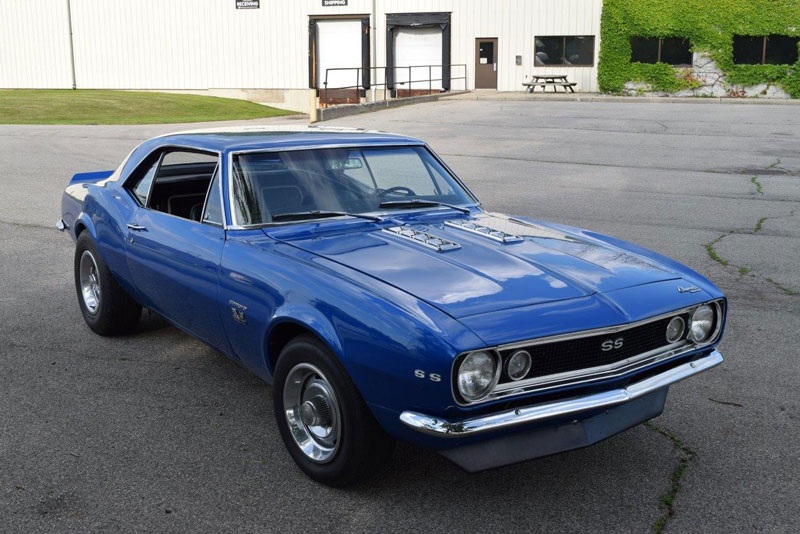

|  | |
| Источник: Wikipedia ® | |
|
Chevrolet Camaro — американский мускулистый автомобиль, «muscle car», выпускающийся подразделением Chevrolet корпорации General Motors с 1966 года. Производство было прекращено в 2002 году и возобновлено на новой технической базе в 2009 году. В послевоенные десятилетия в США родилось более 70 миллионов детей, к началу 1960-х они оканчивали школу, получали водительские права, устраивались на работу и были готовы покупать всё больше и больше автомобилей. Автомобильные корпорации долго не могли понять, как им капитализировать этот рынок. Они продолжали выпускать большие семейные седаны, хотя уже становилось понятно, что молодёжи нужно что-то новое, автомобиль не такой, как у их родителей. Первым, кто предложил своим дизайнерам и конструкторам создать молодёжное спортивное четырёхместное купе, был Ли Якокка, глава Ford на тот момент. Получившийся Mustang создал новый класс автомобилей — «Пони кар» (Pony car) и полностью изменил взаимоотношения бэби-бумеров и автоиндустрии. В руководстве GM не сразу поняли это. А когда стало известно, что за два месяца продано более 100 тысяч автомобилей Mustang, все были в шоке. На этот вызов необходимо было ответить, требовался новый автомобиль, лучший во всём. Он должен быть более комфортабельным, лучше выглядеть и, что самое главное, должен быть быстрее. |
|